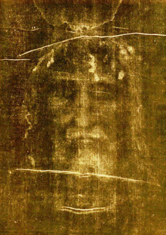
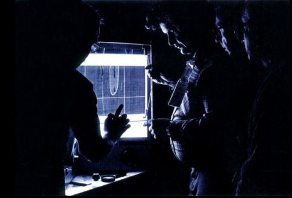
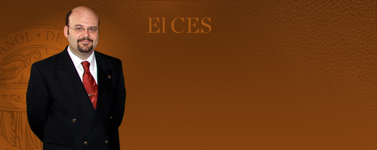
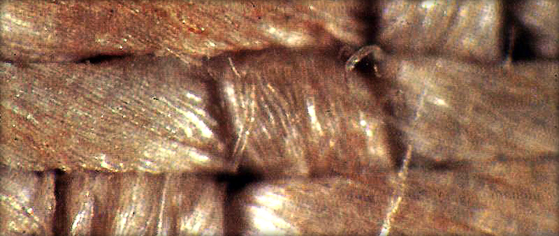

TURÍN, ITALIA
El lienzo de Turín: su tejido, su imagen y las huellas de su historia.
CENTRO ESPAÑOL DE SINDONOLOGÍA
Historia y ciencia para estudiar
las reliquias atribuidas a Jesús.
Exploramos la Sábana Santa de Turín, el Sudario de Oviedo y otras reliquias a través de la historia, la investigación y el diálogo.
El rigor comienza por distinguir los datos de las interpretaciones.

Comience por el objeto, conozca su historia y después explore las investigaciones. Un recorrido para orientarse en cada tema.
TURÍN, ITALIA
El lienzo de Turín: su tejido, su imagen y las huellas de su historia.
OVIEDO, ESPAÑA
El lienzo de la Catedral de Oviedo, estudiado por el equipo de investigación del CES.
VALENCIA, ESPAÑA
La copa conservada en Valencia y vinculada por la tradición a la Última Cena.

ESTUDIO DE LA SÍNDONE
02 — EL CENTRO
Somos una asociación cultural sin ánimo de lucro interesada en la figura histórica de Jesús y en los objetos relacionados con ella.
La sindonología es el estudio de la Sábana Santa o Santa Síndone. Su nombre procede de las palabras griegas sindon, sábana, y logía, estudio o tratado.

JORGE MANUEL RODRÍGUEZ ALMENARPresidente del CES
NUESTRA FORMA DE TRABAJAR
Estudiamos los objetos sin dar por supuesta su autenticidad.
Buscamos conocer qué son estas piezas y qué información pueden aportar sobre Jesús de Nazaret. Las reliquias son un medio para profundizar en su figura histórica.
El CES es una entidad no confesional en la que participan creyentes y no creyentes, de distintas edades y profesiones.
03 — PUBLICACIONES
La revista Línteum reúne trabajos originales y textos de prensa sobre la Síndone y otras reliquias relacionadas. Consulte cómo recibirla.

CONTACTO Y PARTICIPACIÓN
Información, actividades y cómo asociarse.
ces@linteum.com